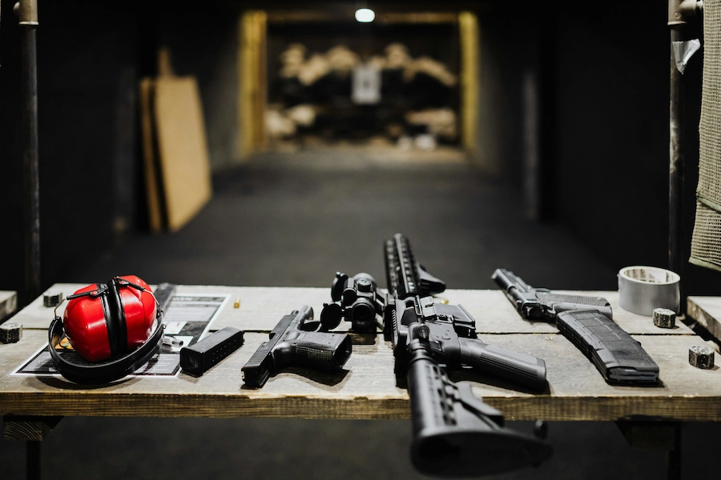

Range Safety: Confident, Courteous, and In Control
Shooting ranges are designed to be safe and controlled environments. Knowing how to act, what to listen for, and how to respond to commands keeps everyone protected and helps you feel confident on the line.
Core Range Safety Principles
While every range may have slightly different rules, the core principles are the same: listen to the range officer, follow posted rules, and always prioritize safety over speed or pride.
- Always follow the instructions of the Range Safety Officer (RSO).
- Only handle firearms when and where it is permitted.
- Keep your muzzle pointed downrange at all times.
- Only load when you are on the firing line and allowed to do so.
- Stop immediately if you are unsure or feel unsafe.
Common Range Commands
Range commands keep everyone coordinated and safe. Click on a command below to see what it means and how you should respond.
Range Etiquette & Best Practices
- Arrive early so you can review posted rules before shooting.
- Keep conversations respectful and avoid distracting other shooters.
- Ask questions! RSOs would rather answer questions than fix mistakes.
- Clean up your area, brass, and trash before leaving if the range allows.
- Never be afraid to call “Cease Fire” if you see something unsafe.
Remember, being a good range neighbor is just as important as being a skilled shooter. Courtesy and safety go hand in hand.
Ready to Practice Safe Shooting?
Review these commands before your next range visit and practice how you will respond. The more familiar you are with the language of the range, the more confident and calm you will feel when it matters.
Home Storage Safety